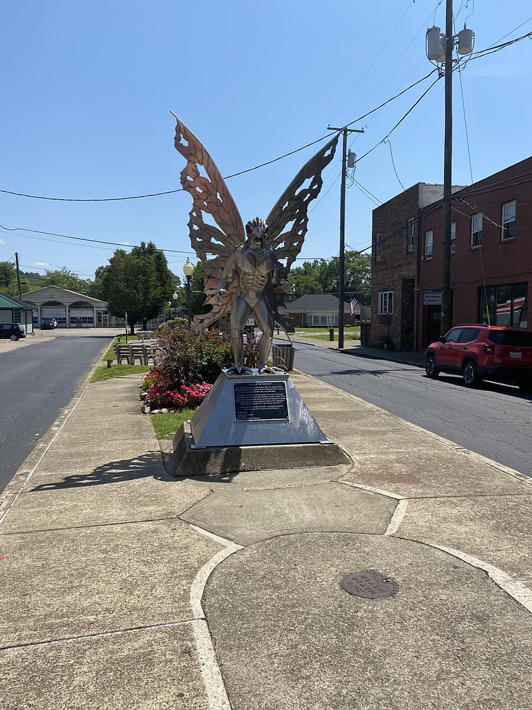
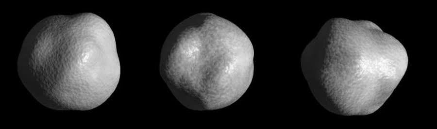
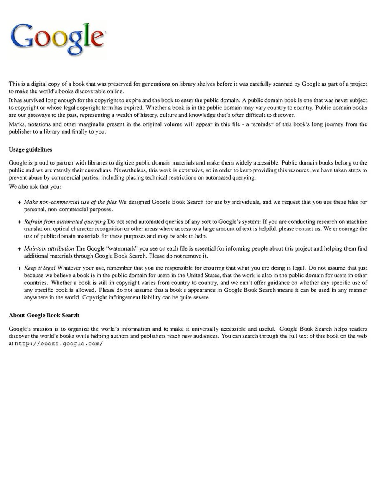
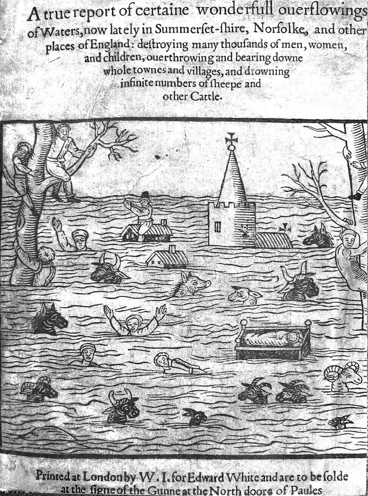

Былички · главное
Шестьдесят лет человеку с красными глазами
В ночь на 15 ноября 1966 года Роджер и Линда Скарберри и Стив и Мэри Маллетт ехали мимо заброшенных складов боеприпасов под Пойнт-Плезант. По их словам, у дороги стояло существо ростом с человека, а потом оно погналось за машиной. Шериф прочесал TNT-зону и никого не нашёл.
Округ Мейсон, Западная Виргиния. Ночь на 15 ноября 1966 года. Две молодые супружеские пары — Роджер и Линда Скарберри, Стив и Мэри Маллетт — ехали по дороге мимо заброшенных складов боеприпасов, той самой TNT-зоны, где до войны хранили взрывчатку. По их рассказу, у обочины стояло существо ростом с человека, с крыльями, сложенными за спиной, и глазами, отражавшими свет фар.
Машина поехала быстрее, существо — тоже. Скарберри говорили, что оно догнало их на скорости около сотни миль в час и шло над дорогой, не взмахивая крыльями. Из города вызвали полицию: шериф и патрульные прочесали TNT-зону и никого не нашли. Ни следа, ни снимка, ни второй пары глаз, которая видела бы то же самое в ту же минуту.
16 ноября вышел Point Pleasant Register. Заголовок — «Couples See Man-Sized Bird … Creature … Something»: пары видели птицу размером с человека… существо… что-то. В этой строке, с многоточиями и словом «что-то» на конце, честности больше, чем во всех последующих книгах: свидетели не знали, что видели, и газета не стала решать за них.
Дальше заработал фольклорный механизм. За год сообщений стало больше, к ним добавились детали — размах крыльев, вой, запах, — а в город приехал Джон Кил, писатель и исследователь необъяснимого, собиравший материал для книги. «The Mothman Prophecies» вышла в 1975-м и навсегда связала существо с обрушением моста Silver Bridge 15 декабря 1967 года, где погибли 46 человек.
Связь эта — литература, а не инженерия. Причиной катастрофы комиссия назвала усталостную трещину в подвеске моста, построенного в 1928 году; Кил лишь успел напечатать предупреждение о «беде в декабре», и этого хватило, чтобы совпадение стало пророчеством. Так устроен жанр: он не объясняет событие, а пришивает его к уже рассказанной истории.
Сегодня в Пойнт-Плезант стоит статуя Мотмана, работает музей, а каждый сентябрь проходит фестиваль, который, по данным местной прессы, растёт год от года. Для города, потерявшего склад и работу, это оказалось единственным устойчивым производством. Шестьдесят лет спустя самое интересное в истории — не существо, а то, что с ним сделали люди.

Коротко
- Первая публикацияPoint Pleasant Register, 16 ноября 1966
- СвидетелиРоджер и Линда Скарберри, Стив и Мэри Маллетт
- МестоTNT-зона у Пойнт-Плезант, округ Мейсон, Западная Виргиния
- Мост Silver Bridgeобрушился 15.12.1967, 46 погибших; причина — усталостная трещина
- Юбилей60 лет первой публикации — ноябрь 2026
Что здесь факт, а что — фольклор
Факт: дата, четверо свидетелей, выезд полиции, публикация 16 ноября и её заголовок. Факт и то, что существо никто не поймал, не снял и не измерил.
Фольклор: размах крыльев, скорость, «предсказание» моста, красные глаза как знак. Детали накапливались после того, как история стала популярной, — это стандартный признак устного жанра, а не доказательство заговора.
Почему это в номере: быличка не требует доказательств, она требует свидетеля и места. Мотман — идеальный случай: есть всё, кроме самой вещи. Дальше в номере — те, кто пытается вещь найти.
Небо
Второй материал · 5 минутСорок девять лет одной строчки
Проект Arecibo Wow! нашёл в архивах несколько сигналов, похожих на тот самый «Wow!» 1977 года, и предложил объяснение без инопланетян: вспышка далёкого источника, прошедшая сквозь облако нейтрального водорода.
15 августа 1977 года радиотелескоп «Big Ear» Университета штата Огайо записал сигнал длительностью около 72 секунд на частоте нейтрального водорода — 1420 МГц, той самой, на которой договорились искать внеземной разум. Астроном Джери Эман, разбирая распечатку, обвёл цифры и написал сбоку одно слово: «Wow!».
Сорок девять лет сигнал оставался одиночным: его искали снова и снова, и больше ничего похожего на том же участке неба не появлялось. Отсюда и слава — единственный кандидат, который не удалось ни подтвердить, ни объяснить.
Проект Arecibo Wow! под руководством Абеля Мендеса из Университета Пуэрто-Рико пошёл другим путём: вместо новых наблюдений — архив. В данных радиотелескопа Аресибо искали события той же формы. Нашли несколько похожих, все — заметно слабее.
Объяснение, которое предлагает команда: это излучение далёкого непостоянного источника — например, вспыхивающей нейтронной звезды, — прошедшее сквозь облако нейтрального водорода. Газ на несколько минут вспыхивает ярче, и узкополосный приёмник видит узкий пик. Событие редкое: нужно, чтобы облако, источник и Земля оказались на одной линии.
Почему не заметили раньше: большинство радиообзоров широкополосные, а такие вещи видны только в узкой полосе. Плюс сам сигнал 1977 года нашли через несколько дней после наблюдения — распечатку разбирали вручную.
Авторы не говорят «доказано». Они предлагают искать больше похожих событий и попробовать вычислить точное положение источника: облака нейтрального водорода хорошо опознаются. Сложность в другом — сам «триггер» может быть рядом с облаком, за ним или далеко на фоне.
Для поиска внеземного разума это хорошая новость, хотя звучит как поражение: чем больше находится естественных объяснений, тем понятнее, как выглядит объяснение искусственное. И тем меньше остаётся места для слова «необъяснимо».
Сеанс
Заметка · 4 минутыКлиент ушёл к боту
Приложение Your AI Psychic продаёт чтения по 4,06 монеты за вопрос, а практикующие тарологи и медиумы добавляют в объявления «без ИИ». Guardian разобрал, что происходит с ремеслом, которое триста лет доказывало, что оно не мошенничество.
Your AI Psychic — не один бот, а больше десятка персонажей: чат, видео, голосовые звонки, хиромантия, разбор натальной карты и ежедневные гороскопы. Экономика простая: вопрос стоит 4,06 монеты, пакеты — от 9,99 доллара за 82 монеты до 99,99 за 1180. Одного из ботов зовут Urban Mystic.
Практикующие люди отвечают на это не только жалобами. Лорин Келлетт, интуитивный коуч с десятью годами практики, говорит Guardian, что индустрия веками живёт с ярлыком мошенничества и привыкла доказывать подлинность; теперь в объявлениях появились пункты «без ИИ», а клиентов просят присылать видео и фото, чтобы показать: читает человек, а не программа.
Часть претензий — про эмпатию: компьютерное чтение, по словам практиков, не слышит. Часть — про рынок: ИИ-гадалки идут в TikTok Live и забирают внимание, которое раньше шло живым сеансам. Отдельная тревога — про чат-боты вроде Grok, к которым люди приходят не за гороскопом, а за решением: уйти с работы, расстаться, переехать.
Антрополог Салли Эпплин в работе об «оракулах и дивинации» с участием больших языковых моделей замечает: часть общения с ботом действительно устроена как консультация у оракула — ответ надо толковать, вопрос можно задать заново, пока не устроит. Но смысл, говорит она, всё равно рождается в голове человека, а модель работает на статистике и не знает ни его культуры, ни его обстоятельств.
Есть и медицинская оговорка, которую приводят сами практики: исследования показывают, что языковые модели могут усиливать паранойю у людей, склонных к психозу. Сеанс с человеком заканчивается, когда заканчиваются деньги; чат-бот доступен в три часа ночи и всегда отвечает.
Редакционный вывод: спиритизм XIX века держался на стуке и темноте, а его цифровая версия — на подписке и уведомлениях. Меняется не метафизика, а способ доставки; вопрос «есть ли там кто-то» остаётся ровно там же, где был в 1848 году.
Чудеса
Заметка · 4 минутыДесять лет слёз и один оправданный муж
Джизелла Кардия десять лет назад объявила, что Дева Мария является ей у озера Браччано. Церковь признала явления не подлинными, прокуратура считает их частью схемы по сбору пожертвований; 12 ноября апелляция оправдала её мужа — но по другому делу.
3 ноября 2016 года Джизелла Кардия, жительница Тревиньяно-Романо под Римом, сообщила, что Дева Мария является ей на холме над озером Браччано и диктует послания. Вскоре на гипсовой статуе, стоявшей в «поле молитвы», заметили красные потёки — их назвали кровавыми слезами. К холму пошли паломники.
Десять лет спустя у истории три разных финала одновременно. Церковь: епархия Чивита-Кастеллана объявила явления не подлинными и попросила верующих не ездить на молитвенные собрания. Суд: прокуратура Чивитавеккьи обвиняет Кардию и её мужа Джанни в мошенничестве при отягчающих обстоятельствах — по версии следствия, они построили систему «уловок, обманов и хитростей», чтобы привлекать людей, «страдающих физическими недугами и находящихся в психологической уязвимости», и получать пожертвования.
12 ноября 2026 года апелляционный суд Рима оправдал Джанни Кардиа по отдельному делу — о незаконной постройке в «поле молитвы». Навес, из-за которого шло разбирательство, снесли ещё в мае 2023 года. Это не приговор по делу о мошенничестве: процесс продолжается, и до окончательного решения обвиняемые считаются невиновными.
Среди тех, кого следствие считает пострадавшим, — режиссёр Луиджи Авелла, автор фильма о святой Розе: по материалам дела он передал «провидице» 123 тысячи евро и собирается выступать в процессе гражданским истцом. Именно его заявление, по данным Tusciaweb, запустило проверку, после которой епархия и высказалась о неаутентичности явлений.
К десятилетию первого «послания» итальянская пресса писала, что Кардия отправилась в тур по Франции и Польше — то есть география паломничества не сузилась, а расширилась. Человек, чьи чудеса церковь не признала, а прокуратура называет инсценировкой, продолжает собирать залы.
Вот это и есть предмет этой рубрики. Не «верить или не верить» — а то, как устроен спрос: чудо требует не доказательства, а свидетеля и повторения. Десять лет, три инстанции и один снесённый навес — а поток людей не иссяк. Разбираться в этом интереснее, чем в очередном споре о слезах на гипсе.
Лаборатория
Заметка · 3 минутыТридцать шесть футов, которые ускоряются сами
Астероид 1998 KY26 диаметром около одиннадцати метров вращается раз в 5,5 минуты и летит с негравитационным ускорением. Расчёт инженеров Georgia Tech говорит: водяного льда внутри быть не может — он испарился бы за две тысячи лет. В 2031 году к нему придёт аппарат.

1998 KY26 — объект размером с автобус: около 36 футов, то есть метров одиннадцать. Он вращается вокруг своей оси раз в пять с половиной минут — быстрее большинства известных астероидов — и, двигаясь вокруг Солнца, слегка отклоняется от расчётной траектории.
Отклонение маленькое, но принципиальное: на объект действует сила, которой там быть не должно. Самый очевидный кандидат — водяной пар: лёд под солнечным нагревом испаряется и толкает тело, как в комете. Только хвоста и комы у 1998 KY26 нет, поэтому его отнесли к гипотетическому классу «тёмных комет».
Новая работа Корбина Хансена и Масатоши Хирабаяси из Технологического института Джорджии проверяет эту версию численно: трёхмерная модель нагрева показывает, способен ли объект сохранить столько льда, чтобы объяснить ускорение. Ответ — вряд ли: температуры внутри слишком высоки, лёд не выживает.
Даже если бы вода составляла всего процент массы, расчёт даёт срок жизни льда около двух тысяч лет — по астрономическим меркам мгновение. Значит, либо механизм другой, либо источник ускорения не вода: варианты — переизлучение тепла с неровной поверхности, эффект Ярковского, потеря массы вместе с пылью.
Разрешить спор должен аппарат: в 2031 году к 1998 KY26 прибудет японская «Хаябуса-2», которая сейчас летит к нему после выполнения основной миссии у астероида Рюгу. Это будет первый визит к объекту такого класса — и первый случай, когда «странное ускорение» можно проверить вблизи, а не по пикселям.
Конспирология
Архив · 4 минутыЗемля не шар: инструкция 1865 года
Public Domain Review выложил «Zetetic Astronomy» Сэмюэла Роуботэма — книгу, с которой началась современная вера в плоскую Землю. Её метод важнее её выводов: не проверять теорию, а отменить теорию как таковую.

Сэмюэл Бирли Роуботэм публиковался под псевдонимом Параллакс и называл свой метод «зететическим» — от греческого «искать». Смысл противопоставления простой: не «гипотеза», а «исследование». Он отказывался строить модели и требовал объяснять только то, что видно глазом, — и уже из этого выводил, что Земля плоская.
Главный опыт Роуботэма — канал Бедфорд-Левел в Англии, прямая вода на шесть миль. Он входил в воду с телескопом и смотрел на флаг, укреплённый на шесте на том же уровне над водой: флаг был виден целиком. Для сторонника круглой Земли это значило, что нужен поправочный коэффициент на рефракцию; для Роуботэма — что кривизны нет.
Книга 1865 года — не курьёз, а работающий шаблон. Возьмите наблюдение, которое действительно трудно объяснить без подготовки. Объявите поправки — рефракцию, гравитацию, соглашения — уловками касты. Сделайте из этого вывод, что каста скрывает правду. Всё остальное — детали, которые можно дописывать десятилетиями.
Именно так эта конструкция и живёт: Общество плоской Земли, основанное в 1956 году Сэмюэлом Шентоном, а позже возглавленное Чарльзом Джонсоном, повторяло аргументы Роуботэма почти дословно, а современные ролики повторяют их с экрана телефона. Аргумент не меняется — меняется носитель.
Что с этим делать читателю: не спорить с выводом, а смотреть на правило. Если вам предлагают «просто посмотреть своими глазами» и одновременно запрещают учитывать условия наблюдения — это не метод, это позиция. Позиция непобедима в споре и бесполезна в навигации.
Кстати, о пользе: по той же воде Бедфорд-Левел ходят лодки, и штурман, который поверит Роуботэму, ошибётся в расчётах на первом же повороте. Это, пожалуй, лучший тест на любую конспирологию — не «кто прав», а «кто доедет».
Архив
Заметка · 3 минутыВода, которая была письмом
В январе 1607 года Бристольский залив вышел из берегов и утопил сотни людей. Современники печатали об этом памфлеты — и читали наводнение как предупреждение свыше. Public Domain Review показывает, как рождалась культура знамений.

20 января 1607 года по старому стилю вода пришла в Бристольский залив и на Сомерсетские низины. По разным оценкам погибли от нескольких сотен до двух тысяч человек; вода поднялась на несколько метров и залила деревни, которые стояли на земле, отвоёванной у моря.
Через несколько месяцев в Лондоне вышли памфлеты с длинными названиями вроде «A true report of certaine wonderfull overflowings of waters» — «Правдивое сообщение о некоторых чудесных разливах вод». В них были списки погибших, описания ущерба и главное — толкование: вода пришла не просто так, а как предупреждение за грехи.
Это жанр, у которого есть имя: литература знамений, prodigy literature. В XVI–XVII веках Европа печатала тысячи таких листков — о двухголовых телятах, кровавых дождях, кометах и наводнениях. Каждое событие вписывалось в одну схему: необычное — знак — призыв к покаянию.
Что важно для сегодняшнего номера: современники не были глупее. Они жили в мире, где причинность объяснялась волей, а не давлением и приливом, и памфлет был способом связать факт со смыслом — ровно так же, как сегодняшняя лента связывает землетрясение с «сейсмическим оружием» или затмение с «репетицией».
Разница в одном: у них был общий язык толкования, и потому знамение объединяло. У нас языков тысячи, и каждое знамение делит читателей на тех, кто «понял», и тех, кто «не видит очевидного». Спрос на знамения не исчез — он просто перестал быть общим.